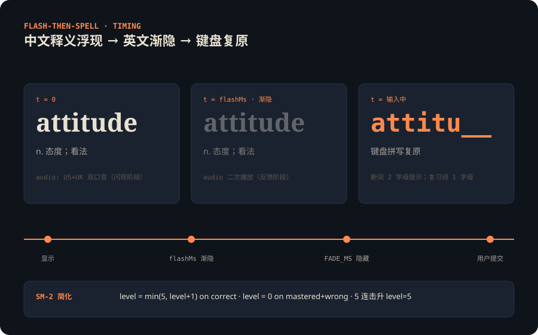
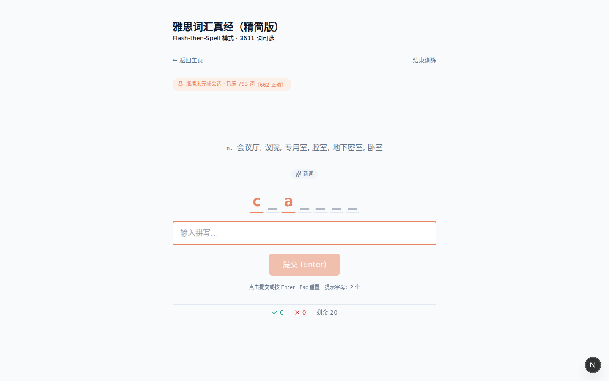
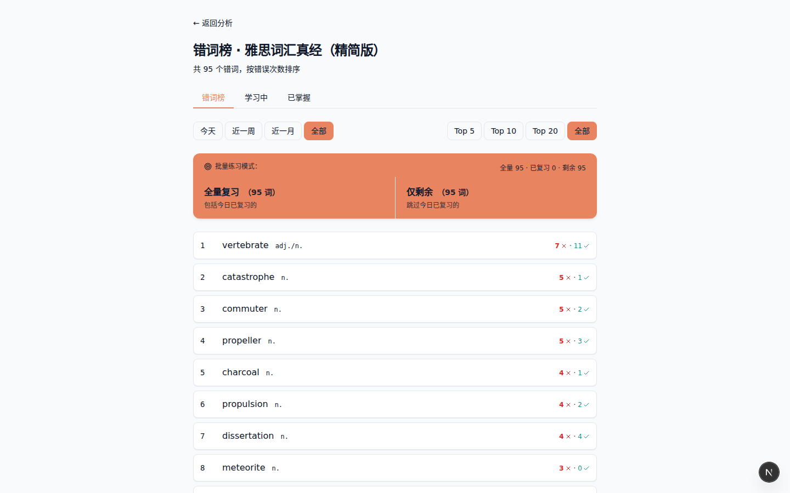
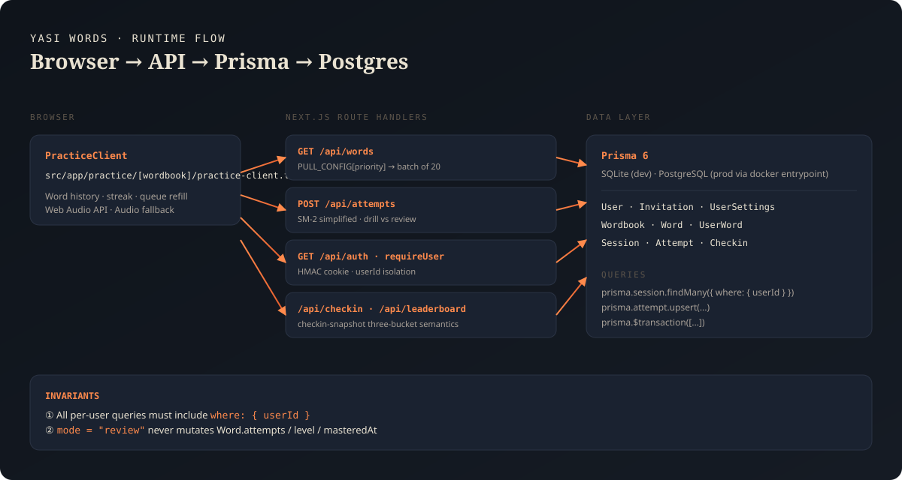

Flash-then-Spell
键盘拼出的「机考手感」
显示中文释义与英文 → 英文在 flashMs 内渐隐 → 键盘复原。错的词反复回到队列，答对进入下一关。
- 新词 2 字母提示、复习词 1 字母、已熟练不提示
- 答对 +1 等级，5 连击进入 mastered
- 已熟练答错 → 重置 level=0 重学

Yasi Words · Project Showcase
本地优先的闪卡拼写循环：中文释义浮现 → 英文渐隐 → 键盘复原。SM-2 简化记忆曲线、US/UK 双口音真人发音，贴合机考的键感与节奏。

功能
从单词浮现、拼写反馈，到错题集合与排行榜，每一段都对应可读的代码入口。
Flash-then-Spell
显示中文释义与英文 → 英文在 flashMs 内渐隐 → 键盘复原。错的词反复回到队列，答对进入下一关。

三路集合
每个单词按 masteredAt 与 level 自动归类，三个页面顶部 tabs 互链。
错词 Session（review mode）只插入 Attempt，不污染 word 持久化字段。

加权拉取
单 batch 20 词，按比例分配新词、学过词、已熟练词。全部 mastered 后 fallback 到 learned 池，保证无限练习节奏。
review: [新 4, 学过 8, 已熟 8]
balanced: [新 14, 学过 5, 已熟 1]
new: [新 18, 学过 2, 已熟 0]音频
闪现阶段 + 反馈时各播一次。accent 自动 fallback，/audio/* 走 1 年
immutable 缓存。
反馈
答对双音 ding、答错 buzz；streak 3/6/9/12/15 milestones 阶梯式升级音效，零外部资源。
多用户
admin 通过一次性邀请码创建账号；Session / Attempt / Checkin / UserSettings
全部带 userId，跨用户零泄漏。
数据
重置前 eager 快照所有有 attempt 的日期，/checkin 永远能显示历史。
代码解剖
下面四段代码片段均来自 src/ 当前主干，未删改。

requireUser()Web Crypto HMAC 签名 cookie；page 与 API 双重校验。所有受保护入口共享同一个守卫。
export async function requireUser(): Promise<CurrentUser> {
const user = await getCurrentUser();
if (!user) throw new ApiAuthError();
return user;
}GET /api/words
按 PULL_CONFIG[priority] 在 新 / 学过 / 已熟
三个池中按比例抽词；同 batch 上限 20，单次响应 < 100 KB。
const ratio = PULL_CONFIG[priority].ratio; // [new, learned, mastered]
const counts = ratio.map((p) => Math.floor(N * p));
counts[0] += N - counts.reduce((a, b) => a + b, 0); // 兜底补齐POST /api/attemptsSM-2 简化版：drill 模式更新 level / attempts / masteredAt；review 模式仅插入 Attempt，不动 word 状态。
// drill
newLevel = correct ? Math.min(5, level + 1) : (level >= 5 ? 0 : Math.max(0, level - 1));
// review
// → 仅 await prisma.attempt.create({ data: { wordId, sessionId, correct } })checkin-snapshot 三桶语义
masteredTodayCount = 升级事件；newCount =
firstAttemptedAt；learningCount =
masteredAt IS NULL AND firstAttemptedAt < today。
const start = startOfDay(date);
const end = addDays(start, 1);
return {
masteredTodayCount: await countPromotes({ userId, gte: start, lt: end }),
newCount: await countFirstAttempts({ userId, gte: start, lt: end }),
learningCount: await countLearning({ userId, before: start }),
};部署
GitHub Actions runner 收到 commit，禁用 BuildKit cache（避免 stale audio layer）。
镜像推送到阿里云容器镜像 ACR；AUDIO_BUNDLE_URL 在构建时下载并烤入
image。
SSH server → docker compose pull app && up -d --force-recreate。
deploy 后保留当前 + 上一个 image tag，事故时 up <previous_tag> 即可。
03:00 Asia/Shanghai 自动 pg_dump → 保留 14 天 → GH Actions artifact
90 天。
词源《雅思词汇真经》+《IELTS》两本 PDF 共 10 686 词；双引擎交叉验证（PyMuPDF + pdfplumber）+ 人工校对；抽样 1000/1000 = 100% PASS ✅。